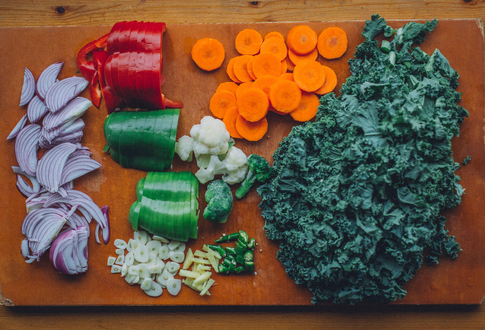
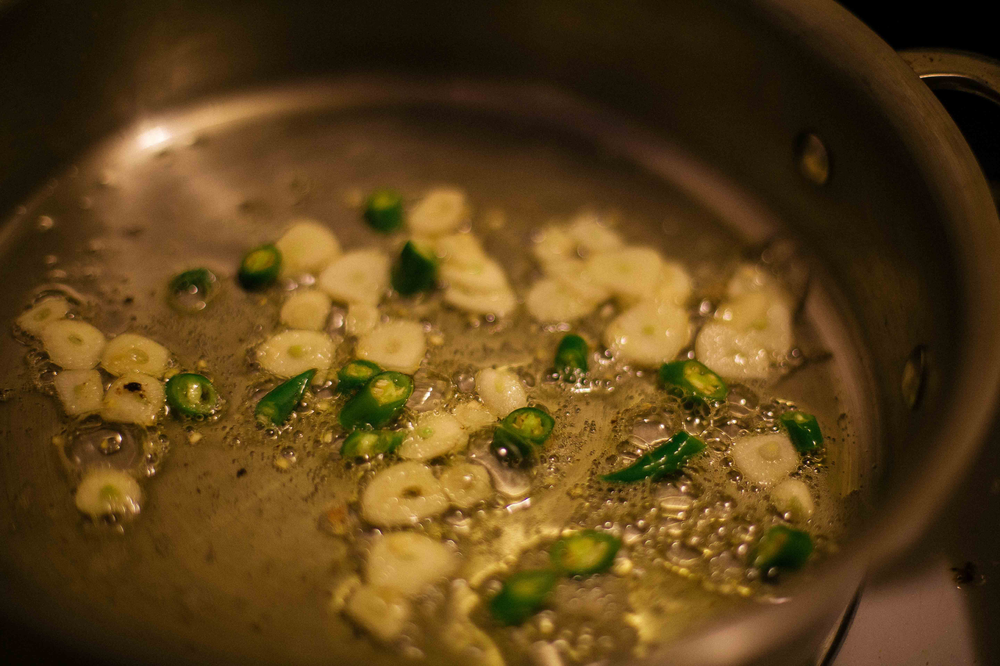
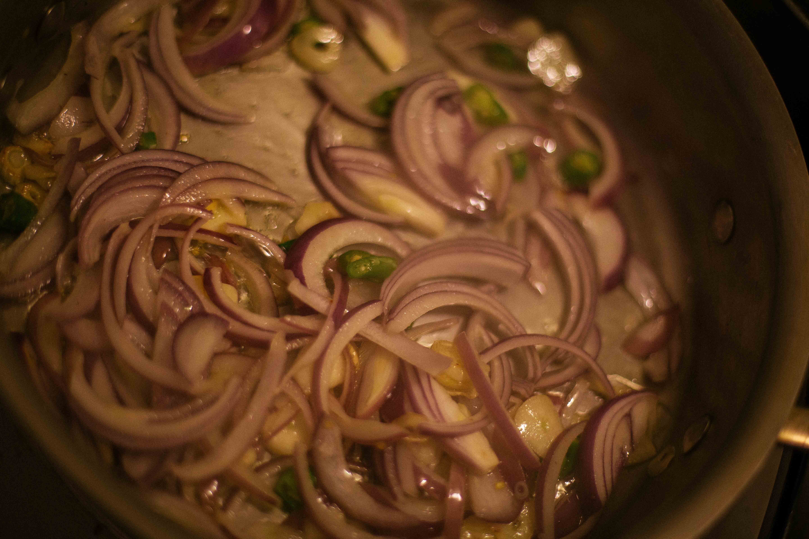
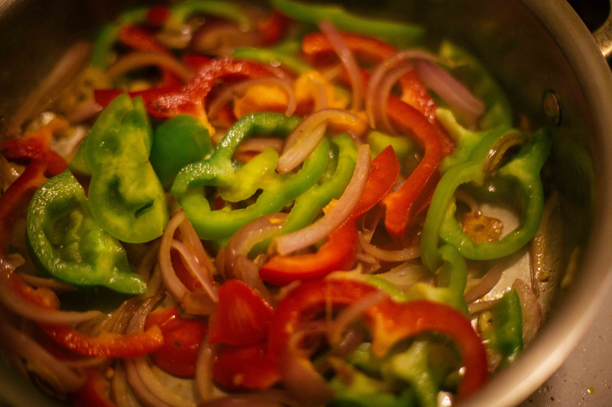
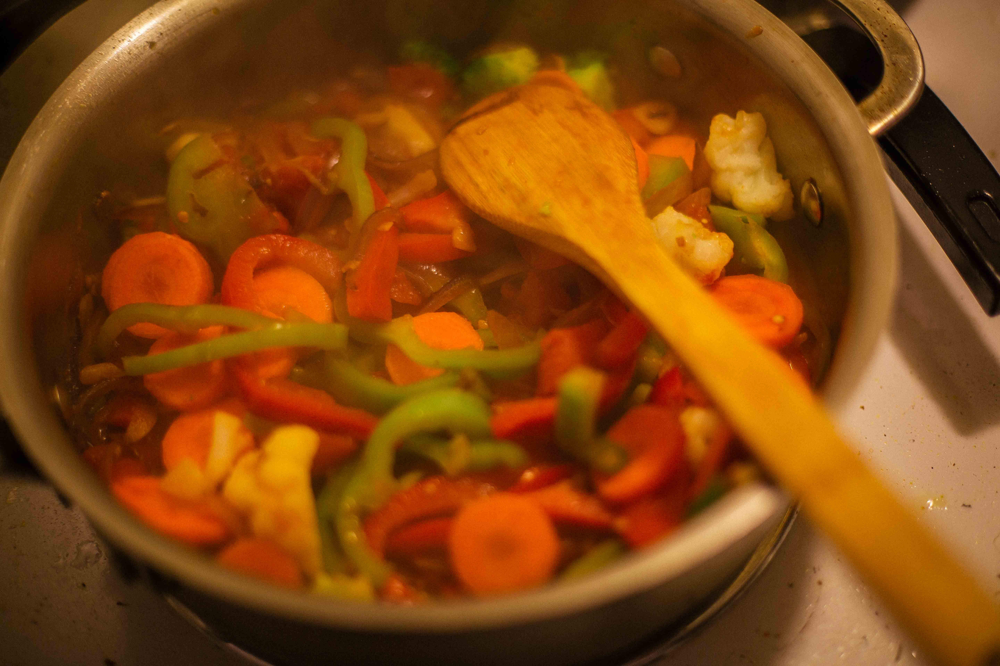
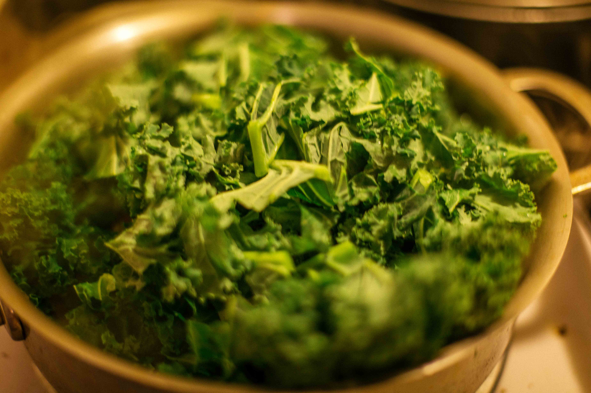
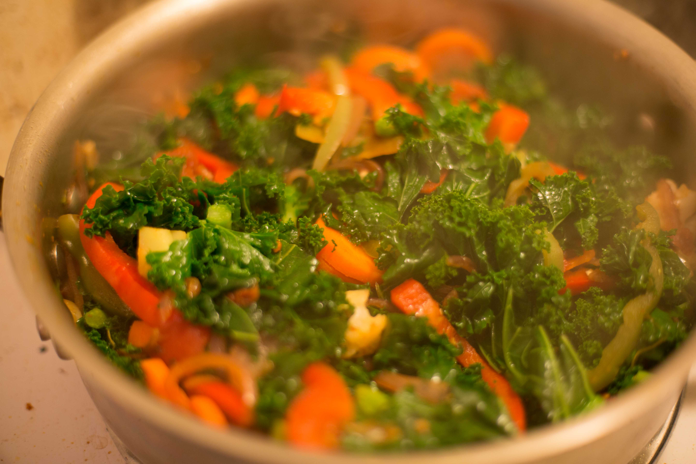
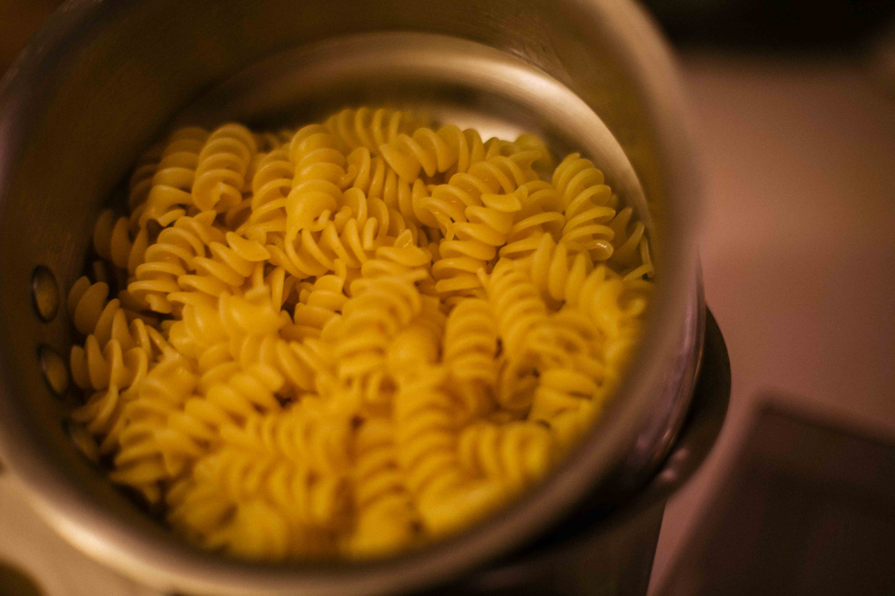
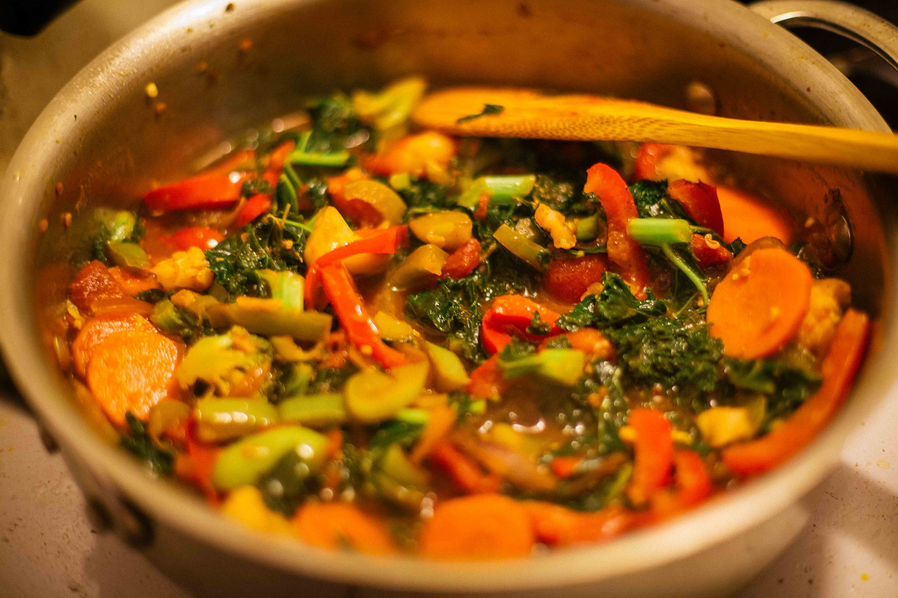

This dish is an easy way to eat a lot of vegetables and not even realize it! This pasta has it all - color, flavour, nutrients and comfort.
- Kale, one bunch
- Carrots
- Peppers - red, green, orange, yellow, any color/taste you prefer
- Onions
- Garlic
- Green chillies - optional
- Frozen vegetables - if you have them on hand
- A can of tomatoes/pasta sauce
Instructions

Finely chop the veggies.


In a heavy bottomed pan, heat 2-3 tbsp of olive oil.
Add the garlic and the let the oil get infused with flavors.
Add green chillies as the garlic starts changing color.
Add onions and cook them till they turn translucent.
The peppers go in as the onions soften.
These vegetables take the longest to become tender so they go in first!
Add carrots and cook till mushy.
Add a can of tomatoes/pasta sauce.
The kale is going to reduce in size so don’t shy away from adding as much as you fancy.
Add in the frozen vegetables (or any that were forgotten in the refrigerator).
In a saucepan, boil 5 cups of water. Add salt to hasten the process.
Add the pasta to the water as it begins to boil and cook till the water starts bubbling again.
Cook the pasta - till tender or according to package instructions.
Taste the pasta as it boils to prevent it from being under or over cooked.
Drain the water once the pasta is cooked to your liking.
Mix in the pasta with the vegetable sauce and enjoy!